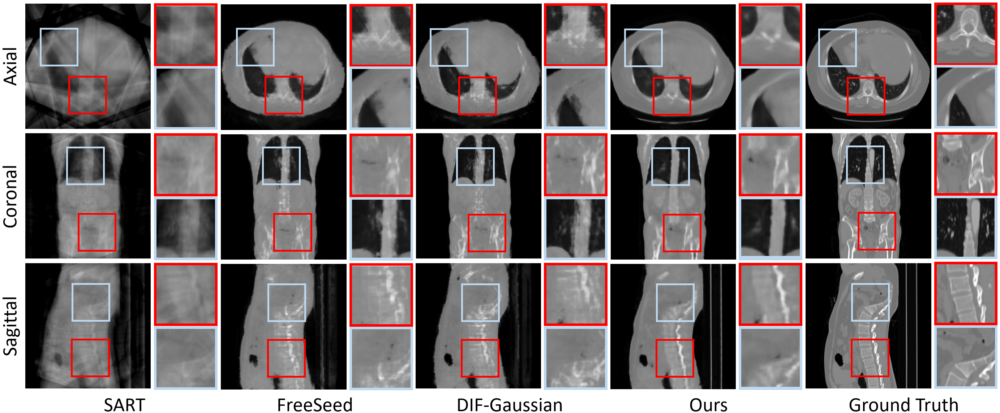
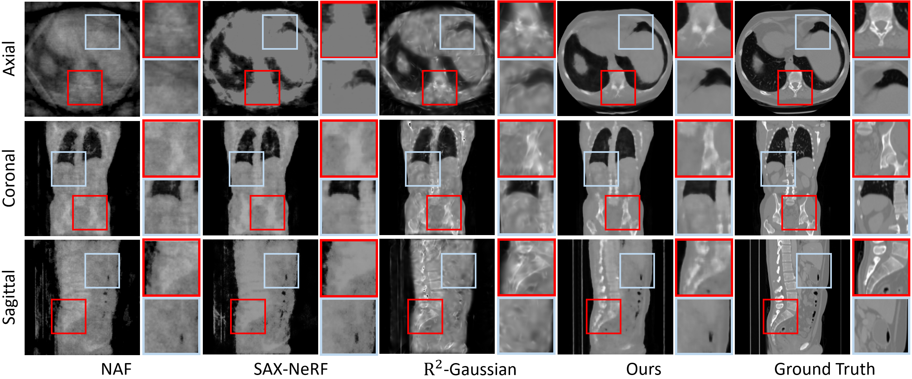
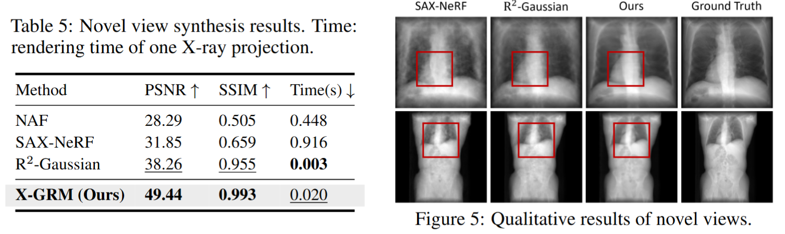

Abstract
Computed Tomography serves as an indispensable tool in clinical workflows, providing non-invasive visualization of internal anatomical structures. Existing CT reconstruction works are limited to small-capacity model architecture, inflexible volume representation, and small-scale training data. In this paper, we present X-GRM (X-ray Gaussian Reconstruction Model), a large feedforward model for reconstructing 3D CT from sparse-view 2D X-ray projections. X-GRM employs a scalable transformer-based architecture to encode an arbitrary number of sparse X-ray inputs, where tokens from different views are integrated efficiently. Then, tokens are decoded into a new volume representation, named Voxel-based Gaussian Splatting (VoxGS), which enables efficient CT volume extraction and differentiable X-ray rendering. To support the training of X-GRM, we collect ReconX-15K, a large-scale CT reconstruction dataset containing around 15,000 CT/X-ray pairs across diverse organs, including the chest, abdomen, pelvis, and tooth etc. This combination of a high-capacity model, flexible volume representation, and large-scale training data empowers our model to produce high-quality reconstructions from various testing inputs, including in-domain and out-domain X-ray projections.
Comparsion with traditional and feedforward models
Comparison with self-supervised models
Novel view synthesis
BibTeX
If you find our work helpful, please consider citing: